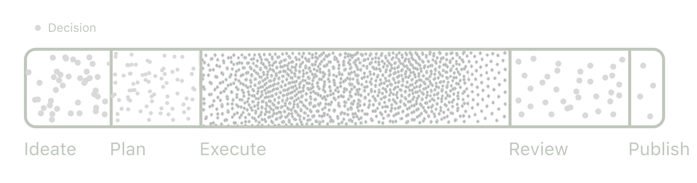

Agency, taste, and new creative tools
"Agency" and "taste" are buzzwords these days, but their popularity hints at how the creative process is changing across many domains.
Starting with definitions:
- Agency is the degree to which someone thinks for themselves and makes decisions independent from the social and intellectual consensus around them.
- Taste is the degree to which someone appreciates the quality and quantity of details that make up excellent work.
Agency and taste matter for creative work because without them, you get what's now popularly known as slop.
Sci-fi writer Ted Chiang recently explained why this is. In an essay in the New Yorker, he noted that when AI models are prompted to write a story or generate an image, they reflect average choices, not brilliant ones. This is why he elsewherecharacterized ChatGPT's responses as "blurry JPEGs of the web."
Art, Chiang writes, is the sum of innumerable decisions made during the creative process. It might look something like this:
These decision points amount to moments of expression of the creator's agency and taste. High-agency creators with good taste make unique, surprising, and effective choices, yielding great final products.
But by outsourcing these decisions to AI models, Chiang argues, one produces slop because such models auto-apply the default or median decision across the board, a low-agency, low-taste move.
While AI tools are certainly helping many people create slop, I would argue that the best creative tools will enhance creative expression.
In a classic talk, Bret Victor noted that creators need direct relationships with the media they create. He distinguished between "engineering" and "authorship":
- Engineering is the act of manipulating an indirect representation of the final product, usually code or schematics.
- Authorship is the act of manipulating a direct representation of the final product, such as composing a word document.
Authorship, Victor argues, is a superior mode of creation, because the creator can make decisions while referencing a high-resolution representation of the consumer's experience. This creator has a lot of empathy for what the end user will ultimately think and feel about the work.
The real promise of new creative tools, then, is not just to save time for creators. The promise is to give more creators high-fidelity representations of the end work throughout the creative process, from idea to distribution. This will allow creators to better express agency and taste in the process, and hopefully create even better art.
In fact, this may explain why new AI tools have excelled in certain domains but not in others. AI writing tools, for example, have not exploded in popularity, as Lex founder Nathan Baschez recently noted. However, AI coding tools (Cursor, Lovable), AI video tools (Runway, Sora), and AI music tools (Suno) have taken off.
Word processors already offer a reasonably high-fidelity representation of end user experiences, as Victor noted. Compare that to coding – that's why products like Cursor and Lovable feel like magic.